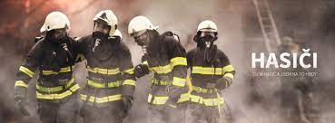

Profese hasiče
Hasič je profesionál nebo dobrovolník, který je zodpovědný za ochranu života, majetku a životního prostředí. Náplň práce hasiče se liší podle zaměstnání a pracovního zařazení.
Profesionální hasiči
Profesionální hasiči jsou zaměstnanci Hasičského záchranného sboru ČR. Jejich práce zahrnuje:
- Hašení požárů a záchranné práce při dopravních nehodách
- Technické zásahy a vyprošťování osob
- Chemické a ekologické zásahy
- Poskytování první pomoci
- Prevence požárů a školení veřejnosti
Dobrovolní hasiči
Dobrovolní hasiči jsou neplacení dobrovolníci, kteří se podílejí na ochraně místního okolí. Jejich práce zahrnuje:
- Hašení požárů a záchranné práce v rámci své obce nebo regionu
- Technické zásahy a vyprošťování osob
- Podpora profesionálních hasičů při větších událostech
- Prevence požárů a školení veřejnosti
